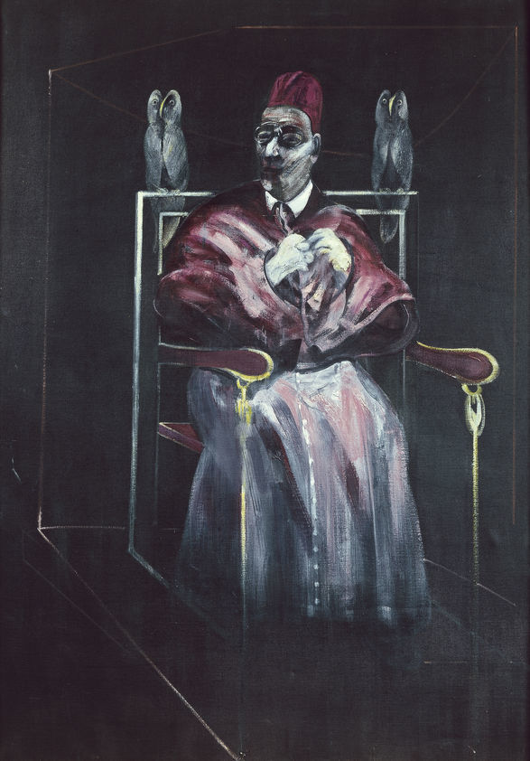
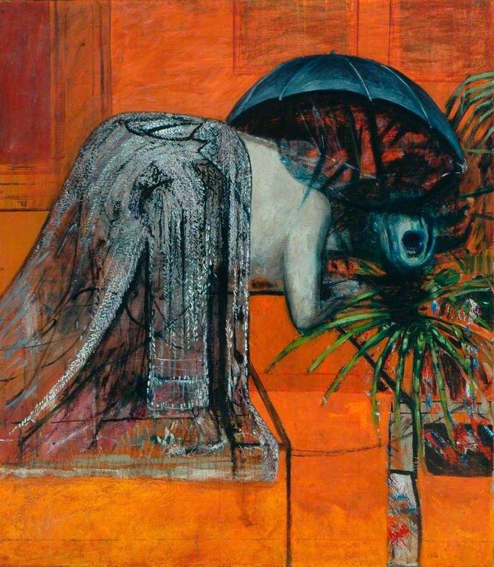
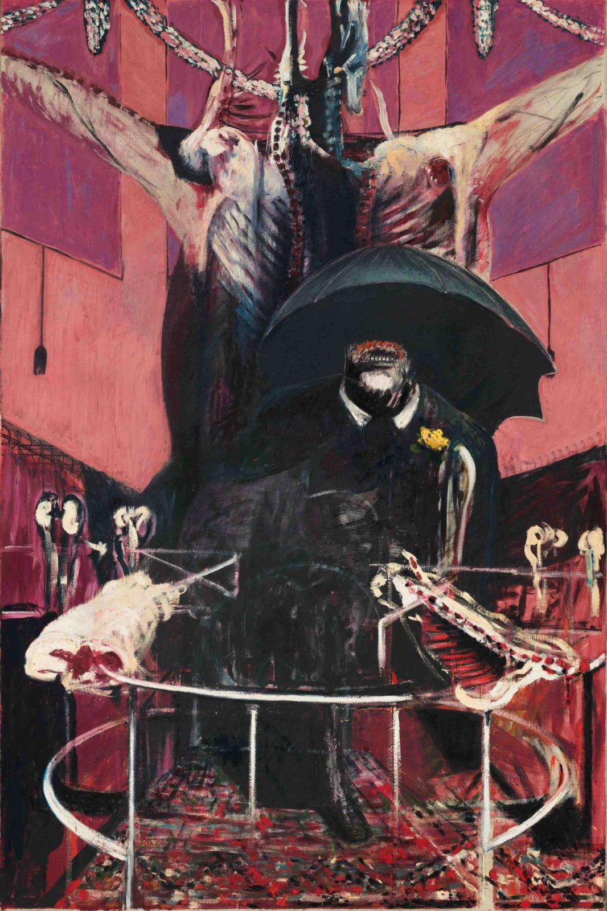
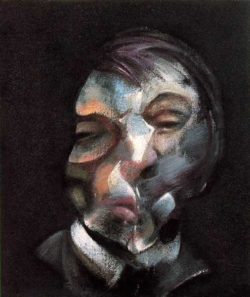
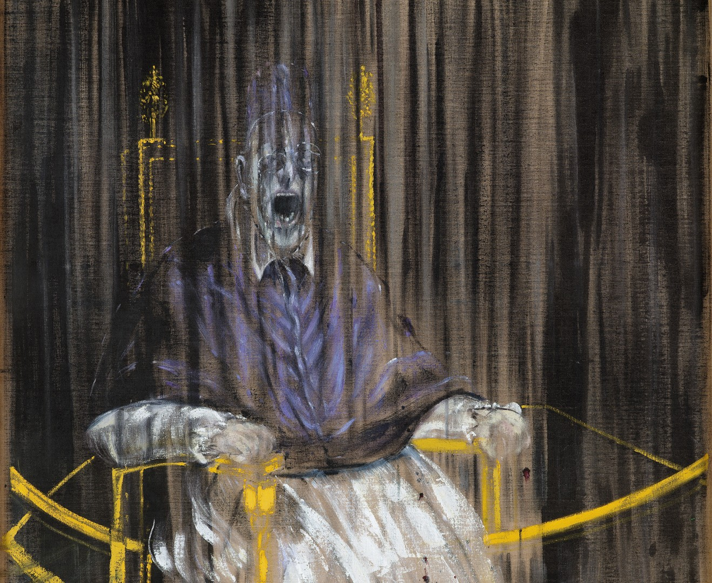

<section id="event-details-section">
    <div class="container">
        <div class="row">
            <div class="col-lg-8 col-md-12 col-sm-12">
                <div class="event-details mb-80">
                    <div class="event-title mb-30">
                        <span class="tag-item">
                            <!-- <fa name="bookmark"></fa> -->
                            Featured events
                        </span>
                        <h2 class="event-title">
                            <strong>Linear Lives </strong>
                        </h2> 
                    </div>
                    <app-carousel-holder></app-carousel-holder>

                    <!-- <div class="event-details-carousel owl-carousel owl-theme owl-loaded owl-drag col-sm-12">
                        <div class="owl-stage-outer col">
                            <div class="owl-stage">
                                <div class="owl-item cloned">
                                    <div class="item">
                                        
                                    </div>
                                </div>
                                <div class="owl-item cloned">
                                    <div class="item">
                                        
                                    </div>
                                </div>
                                <div class="owl-item cloned">
                                    <div class="item">
                                        
                                    </div>
                                </div>
                                <div class="owl-item cloned">
                                    <div class="item">
                                        
                                    </div>
                                </div>
                                <div class="owl-item cloned">
                                    <div class="item">
                                        
                                    </div>
                                </div>
                            </div>
                        </div>
                        <div class="owl-nav">
                            <button type="button" role="presentation" class="owl-prev">
                                <span aria-label="Previous">
                                    <
                                </span>
                            </button>
                            <button type="button" role="presentation" class="owl-next">
                                <span aria-label="next">
                                    >
                                </span>
                            </button>
                        </div>
                    </div> -->
                    <div class="event-info clearfix d-block w-100" style="margin-bottom: 80px;">
                        <ul class="col-sm-12" style="list-style: none;">
                            <li class="col-sm-4 d-inline-block ">
                                <span class="icon">
                                    <!-- <fa name="calendar"></fa> -->
                                    <fa-icon [icon]="faCalendar"></fa-icon>
                                </span>
                                <div class="info-content">
                                    <small>Event Date</small>
                                    <h3>20th March</h3>
                                </div>
                            </li>
                            <li class="col-sm-4 d-inline-block">
                                <span class="icon">
                                   <!-- <fa name="link"></fa> -->
                                   <fa-icon [icon]="faClock"></fa-icon>    
                                </span>
                                <div class="info-content">
                                    <small>Event Time</small>
                                    <h3>18:00 pm - 22:00 pm</h3>
                                </div>
                            </li>
                            <li class="col-sm-4 d-inline-block ">
                                <span class="icon">
                                    <fa-icon [icon]="faMapMarkerAlt"></fa-icon>
                                    <!-- <fa name="map-marker"></fa> -->
                                </span>
                                <div class="info-content">
                                    <small>Event Location</small>
                                    <h3>Galway</h3>
                                </div>
                            </li>
                        </ul>
                    </div>
                    <div class="event-description">
                        <p>
                            Tony O’Loughlin studied at the Limerick School of Art and Design, LSAD and has had an extensive career as a professional designer. In the last ten years he has exhibited prints internationally and at home on his own, as well as many group shows, especially with Limerick Printmakers. 
                        </p>
                        <p>
                            O’Loughlin’s exciting collection of drawings, paintings and printmaking are a dialectical combination, that are sometimes social and sometimes environmental but always thought provoking. This well-known Limerick artist uses a mixture of organic forms and vibrant colours in semi and abstract. The work can be symbolic often with metaphors that explore our place in the ever changing attitudes towards the environment and ourselves. This strong social conscience shows sincerity in the work, re­adily observed.
                        </p>
                    </div>
                </div>
            </div>
            <div class="col-lg-4 col-sm-12">
                <div class="artist-section">
                    <app-artist></app-artist>
                </div>
            </div>
        </div>
    </div>
</section>